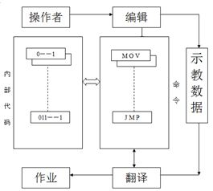
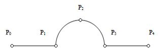
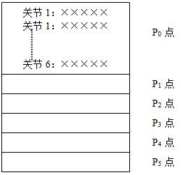
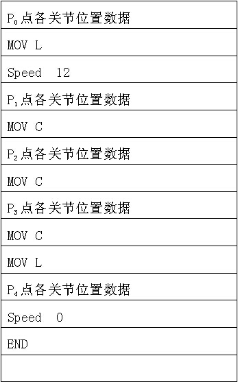

拓展与提高4——工业机器人示教与再现
示教——再现（Teaching——Playback,T/P）方式的工业机器人控制思想如图4-17所示。
图4-17 T/P方式的基本控制思想
机器人示教时，操作者通过示教盒编写运动指令，即用户工作程序，然后由计算机按照这些命令查找它相应的功能代码并存放到某个指定的示教数据区去。这个过程称之为示教编程（包括轨迹数据、作业条件、顺序等）。
再现时，机器人的计算机控制系统自动逐条取出示教命令与其他有关数据，进行解读、计算。作出判断后，将相应信号送到相应的关节伺服系统或端口，使机器人再现示教过的动作，这个过程称之为“自动翻译”。
因此，T/P方式工业机器人的计算机软件控制系统是以“示教编程”与“自动翻译”为核心的。
下面以一个简单、直观的原理性实例，对T/P方式工业机器人的示教、编程与再现的概念进行更加深入的阐述。
图4-18 空间轨迹
假设要求1台6自由度工业机器人的末端手爪走出如图4-18所示的空间轨迹。要求P0～P1，P3～P4为直线；P1，P2，P3，为圆弧；速度为12mm/s。下面具体介绍对机器人进行位置数据、作业顺序与条件及有关参数的示教过程与内部数据结构。
用户通过示教盒，根据坐标系、速度、轴键的选择，经CPU计算，按用户指定的坐标系、速度与轴键（与机器人关节驱动电机一一对应）让机器人运动到P0点、P1点、…、P4点停下，并分别给CPU一个位置数据写入命令，则计算机控制系统将采样得到的机器人各个关节电机给出的当前位置脉冲数分别、依次存放到如图4-19所示的RAM数据区（示教数据区存放的可以是脉冲数，也可以是经过变换后的角度或笛卡尔系坐标值）。接下来，用户可以继续通过示教编程器对作业条件进行示教编程。
图4-19 RAM数据区
根据作业要求，我们可以通过操作盘将各种作业命令通过修改RAM区地址，嵌入示教数据区。P点位置数据下面的MOVL命令表示从P0到P1点按直线运动，spend12表示以12mm/s速度运动，P1，P2，P3点下的MOCC表示这三点之间的轨迹是圆弧，而P3点是圆弧与直线的拐点，在P4点是终点，速度为0。
表4-4 示教数据区
表4-4给出的示教数据区的例子仅是一种原理性结构。在实际应用中的机器人计算机软件系统多采用模块化结构，可使示教编程工作灵活多变，且占用内存最小。用户程序可分为“位置数据文件”，“命令文件”，系统参数文件“等。
当机器人进入再现状态时，示教过的用户程序就决定了机器人的运动方式与作业顺序。它的内部工作过程是，计算机从运动参数文件取出有关动作性质（直线、圆弧。关节）与动作速度。从位置数据文件取出目标点的坐标值，按事先决定的加减速模式和有关系统参数，进行各个插补点的参数计算，各个插补点的动作数据经机器人关节运动控制程序，将动作指令数据同时给定到6个关节电机的位置环输入端，使机器人实现按规定轨迹的平稳运动，直至达到最终目标点。同时，在运动过程中，计算机控制系统不断对其他 有关命令进行解读，并执行个命令。
如上所述，从应用的角度看，机器人的计算机控制系统软件可由“系统程序”与“用户程序”两大部分组成。其中，系统程序时驱动机器人CPU动作的程序；用户程序（也称为用户工作文件），是让机器人完成作业的组合程序。